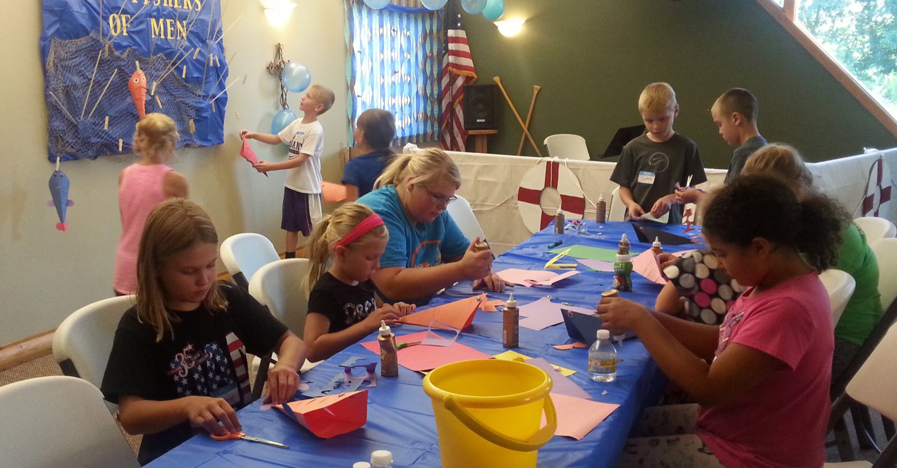
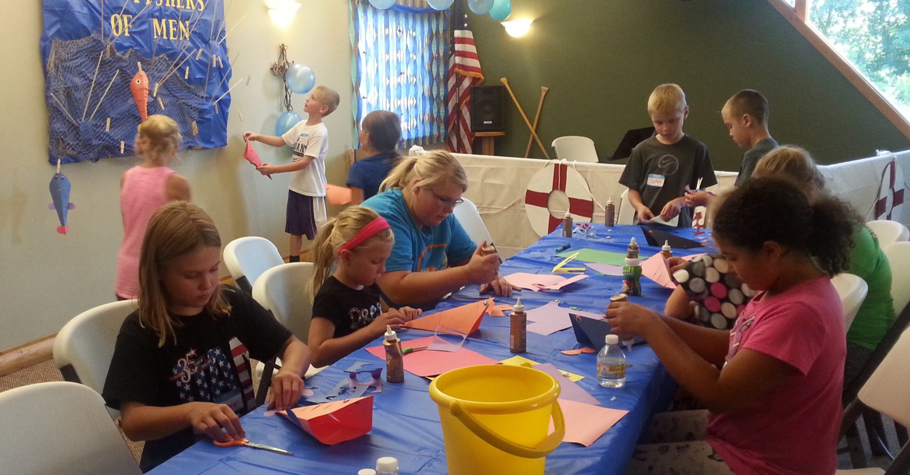
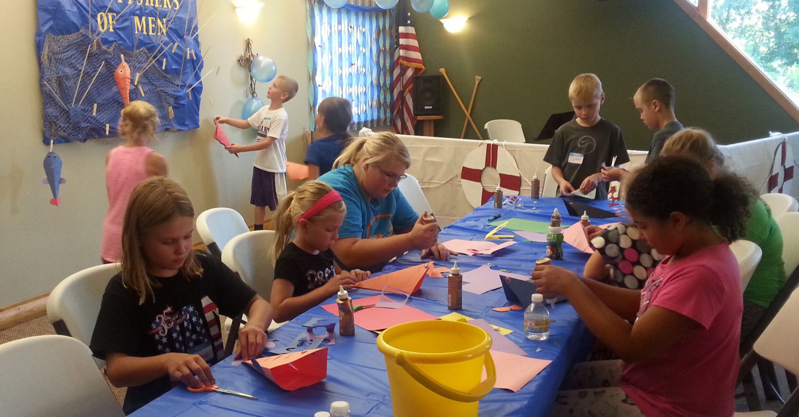
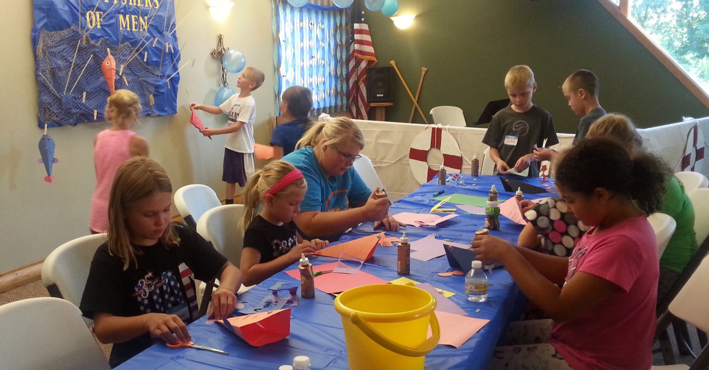

 

Want to further study the Holy Bible and learn about God's word?
click on the link below to read the bible online
Want to further understand the Lutheran Church-Missouri Synod?
just click
on the link below and find out